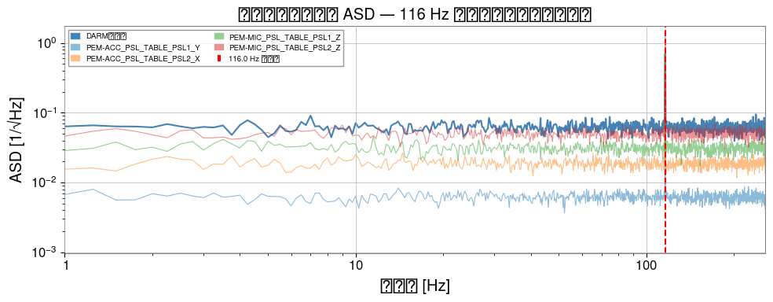
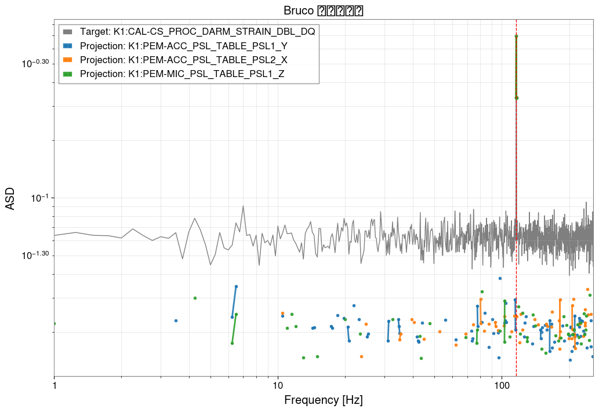
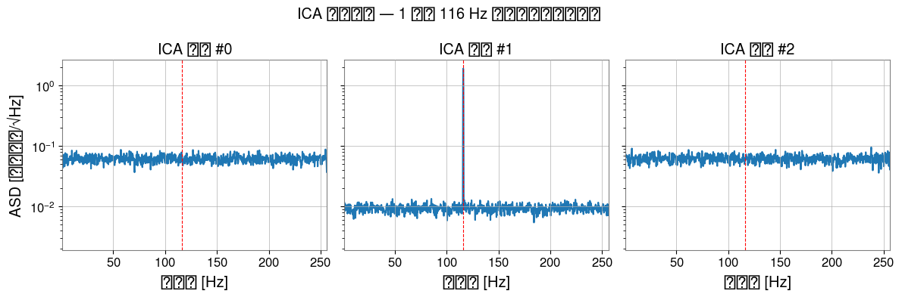
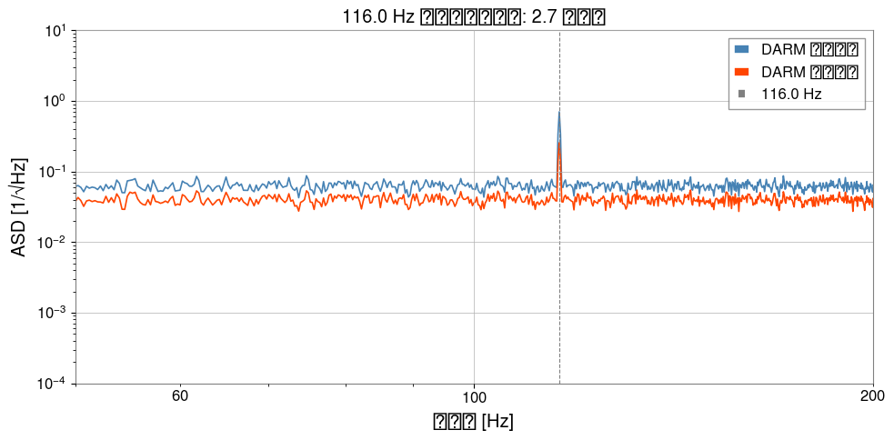

Note
このページは Jupyter Notebook から生成されました。 ノートブックをダウンロード (.ipynb)
Bruco + ICA エンドツーエンド ノイズ削減

このノートブックでは、実際の干渉計コミッショニングで使われる エンドツーエンドのノイズ削減ワークフロー を示します：
Bruco — ブルートフォースコヒーレンス スキャンで最相関の補助チャンネルを特定
ICA — 独立成分分析でノイズ源を分離
ノイズ差し引き — DARM からノイズ寄与を除去し、ASD を比較
これは O4b コミッショニング（DARM 116 Hz ライン調査など）で使われたワークフローを再現しています。
前提知識：
Bruco チュートリアル — Bruco の基礎
PCA/ICA チュートリアル — 分解手法の基礎
セットアップ
[1]:
import warnings
warnings.filterwarnings("ignore", category=UserWarning, module="sklearn")
# ruff: noqa: I001
import matplotlib.pyplot as plt
import numpy as np
from astropy import units as u
from gwexpy.analysis import Bruco
from gwexpy.timeseries import TimeSeries, TimeSeriesDict, TimeSeriesMatrix
1. モックデータの生成
DARM チャンネルに以下が混入するシナリオをシミュレートします：
広帯域ガウスノイズ（バックグラウンド雑音フロア）
環境センサーから漏れた 116 Hz ラインノイズ
4 つの PEM（Physical Environment Monitor）補助チャンネルは、それぞれ異なる割合で同じ 116 Hz ラインを含みます。 これは O4b コミッショニングの実際のケースを模倣しています。
[2]:
rng = np.random.default_rng(42)
fs = 512 # サンプルレート [Hz]
T = 64.0 # データ長 [s]
n = int(fs * T)
t = np.arange(n) / fs
FREQ_LINE = 116.0 # Hz — 除去したいラインノイズの周波数
# ----- 独立ノイズ源 -----
src_line = np.sin(2 * np.pi * FREQ_LINE * t) # コヒーレントなラインノイズ
src_broad = rng.normal(0, 1, n) # 広帯域フロアノイズ
# ----- DARM: 広帯域 + ラインノイズ漏れ -----
DARM_LINE_COUPLING = 0.5
darm_noise = src_broad + DARM_LINE_COUPLING * src_line
target = TimeSeries(
darm_noise, dt=1 / fs, unit=u.dimensionless_unscaled,
name="K1:CAL-CS_PROC_DARM_STRAIN_DBL_DQ", t0=0,
)
# ----- 4 つの補助チャンネル（ライン含有率が異なる）-----
aux_configs = {
"K1:PEM-ACC_PSL_TABLE_PSL1_Y": (0.9, 0.1), # 90% ライン、10% ノイズ
"K1:PEM-ACC_PSL_TABLE_PSL2_X": (0.7, 0.3),
"K1:PEM-MIC_PSL_TABLE_PSL1_Z": (0.5, 0.5),
"K1:PEM-MIC_PSL_TABLE_PSL2_Z": (0.2, 0.8), # ほぼノイズ
}
aux_dict = TimeSeriesDict({
name: TimeSeries(
a_line * src_line + a_noise * rng.normal(0, 1, n),
dt=1 / fs, unit=u.dimensionless_unscaled, name=name, t0=0,
)
for name, (a_line, a_noise) in aux_configs.items()
})
print(f"DARM サンプルレート: {target.sample_rate}")
print(f"補助チャンネル: {list(aux_dict.keys())}")
DARM サンプルレート: 512.0 Hz
補助チャンネル: ['K1:PEM-ACC_PSL_TABLE_PSL1_Y', 'K1:PEM-ACC_PSL_TABLE_PSL2_X', 'K1:PEM-MIC_PSL_TABLE_PSL1_Z', 'K1:PEM-MIC_PSL_TABLE_PSL2_Z']
[3]:
# クリーニング前の ASD で 116 Hz ラインを可視化
fig, ax = plt.subplots(figsize=(10, 4))
asd = target.asd(fftlength=4, overlap=2)
ax.loglog(asd.frequencies.value, asd.value, label="DARM（元）", color="steelblue")
for name, ts in aux_dict.items():
a = ts.asd(fftlength=4, overlap=2)
ax.loglog(a.frequencies.value, a.value, alpha=0.5, lw=0.8, label=name.split(":")[-1])
ax.axvline(FREQ_LINE, color="red", ls="--", label=f"{FREQ_LINE} Hz ライン")
ax.set_xlim(1, fs / 2)
ax.set_xlabel("周波数 [Hz]")
ax.set_ylabel("ASD [1/√Hz]")
ax.set_title("クリーニング前の ASD — 116 Hz にラインノイズが見える")
ax.legend(fontsize=7, ncol=2)
plt.tight_layout()
plt.show()

2. Bruco: 相関補助チャンネルの特定
Bruco.compute() は全補助チャンネルをスキャンし、各周波数ビンで上位 N 件の最相関チャンネルを返します。 これがパイプラインの 第 1 ステージ です：DARM と同じノイズを観測しているセンサーを特定します。
[4]:
bruco = Bruco(target_channel=target.name, aux_channels=[])
result = bruco.compute(
fftlength=4.0,
overlap=2.0,
target_data=target,
aux_data=aux_dict,
top_n=4, # 各周波数ビンで上位 4 チャンネルを保持
)
print("Bruco スキャン完了")
print(f"結果タイプ: {type(result)}")
Bruco スキャン完了
結果タイプ: <class 'gwexpy.analysis.bruco.BrucoResult'>
[5]:
# 116 Hz ライン付近の上位チャンネルを表示
df = result.to_dataframe(ranks=[0])
df_line = (
df[df["frequency"].between(114, 118)]
.sort_values("coherence", ascending=False)
.dropna(subset=["channel"])
.head(10)
.reset_index(drop=True)
)
print("116 Hz 付近の最相関チャンネル:")
df_line
116 Hz 付近の最相関チャンネル:
[5]:
| frequency | rank | channel | coherence | projection | |
|---|---|---|---|---|---|
| 0 | 116.00 | 1 | K1:PEM-ACC_PSL_TABLE_PSL1_Y | 0.995049 | 0.696766 |
| 1 | 115.75 | 1 | K1:PEM-ACC_PSL_TABLE_PSL1_Y | 0.984059 | 0.334223 |
| 2 | 116.25 | 1 | K1:PEM-ACC_PSL_TABLE_PSL1_Y | 0.979161 | 0.333768 |
| 3 | 114.75 | 1 | K1:PEM-ACC_PSL_TABLE_PSL1_Y | 0.459202 | 0.029435 |
| 4 | 116.75 | 1 | K1:PEM-ACC_PSL_TABLE_PSL2_X | 0.403842 | 0.024020 |
| 5 | 115.00 | 1 | K1:PEM-ACC_PSL_TABLE_PSL1_Y | 0.330589 | 0.020492 |
| 6 | 117.00 | 1 | K1:PEM-ACC_PSL_TABLE_PSL2_X | 0.293278 | 0.020808 |
| 7 | 117.50 | 1 | K1:PEM-ACC_PSL_TABLE_PSL1_Y | 0.271092 | 0.016356 |
| 8 | 114.50 | 1 | K1:PEM-ACC_PSL_TABLE_PSL1_Y | 0.269835 | 0.020907 |
| 9 | 115.50 | 1 | K1:PEM-MIC_PSL_TABLE_PSL1_Z | 0.246493 | 0.014666 |
[6]:
# コヒーレンス投影プロット
result.plot_projection(coherence_threshold=0.3)
plt.xlim(1, fs / 2)
plt.axvline(FREQ_LINE, color="red", ls="--", lw=1)
plt.title("Bruco ノイズ投影")
plt.show()

3. ICA: ノイズ源の分離
Bruco スキャンから、DARM と 116 Hz 付近で高いコヒーレンスを持つチャンネルが分かりました。 次にこれらのチャンネルを TimeSeriesMatrix に積み上げ、ICA を適用して 独立したノイズ源を分離します。
ICA モデルは混合行列 A を求めます：
X = S · A^T （X: 観測チャンネル、S: 独立成分）
この行列を使って DARM からノイズ成分の寄与を差し引けます。
注意 — ICA の収束: データによっては FastICA がデフォルトのイテレーション数内で収束しない場合があります。
ConvergenceWarningが表示された場合は、ICA パラメータのmax_iterやtolの調整を検討してください。完全に収束しなくても結果が利用できる場合があります。
[7]:
# Bruco 結果から上位 2 チャンネルを選択
TOP_CHANNELS = df_line["channel"].dropna().unique()[:2].tolist()
print("ICA に使用するチャンネル:", TOP_CHANNELS)
# DARM + 上位チャンネルを TimeSeriesMatrix に積み上げ（shape: n_ch × 1 × n_samples）
channels = [target] + [aux_dict[ch] for ch in TOP_CHANNELS]
data_3d = np.stack([ch.value for ch in channels], axis=0)[:, np.newaxis, :]
tsm = TimeSeriesMatrix(
data_3d, dt=1 / fs, unit=u.dimensionless_unscaled, t0=0,
)
print(f"TimeSeriesMatrix の shape: {tsm.shape} (チャンネル数 × 1 × サンプル数)")
ICA に使用するチャンネル: ['K1:PEM-ACC_PSL_TABLE_PSL1_Y', 'K1:PEM-ACC_PSL_TABLE_PSL2_X']
TimeSeriesMatrix の shape: (3, 1, 32768) (チャンネル数 × 1 × サンプル数)
[8]:
# ICA の実行
n_components = len(channels)
ica_sources, ica_model = tsm.ica(n_components=n_components, return_model=True)
sk = ica_model.sklearn_model
print(f"ICA は {sk.n_iter_} 反復で停止")
print(f"混合行列 A の shape: {sk.mixing_.shape}") # (n_channels, n_components)
# 各 ICA 成分の ASD を周波数領域で可視化
fig, axes = plt.subplots(1, n_components, figsize=(4 * n_components, 4), sharey=True)
for k in range(n_components):
src_ts = TimeSeries(
ica_sources.value[k, 0, :], dt=1 / fs,
unit=u.dimensionless_unscaled, t0=0,
)
asd_k = src_ts.asd(fftlength=4, overlap=2)
axes[k].semilogy(asd_k.frequencies.value, asd_k.value)
axes[k].axvline(FREQ_LINE, color="red", ls="--", lw=0.8)
axes[k].set_title(f"ICA 成分 #{k}")
axes[k].set_xlim(1, fs / 2)
axes[k].set_xlabel("周波数 [Hz]")
axes[0].set_ylabel("ASD [任意単位/√Hz]")
plt.suptitle("ICA 独立成分 — 1 つが 116 Hz にピークを持つはず")
plt.tight_layout()
plt.show()
ICA 収束: 200 反復
混合行列 A の shape: (3, 3)

4. ノイズ差し引きと ASD 比較
116 Hz ラインを含む ICA 成分を特定し（ASD を確認して選択）、 混合行列を使って DARM からその寄与を差し引きます。
DARM_clean = DARM - Σ_k A[0, k] · S_k(t) （ノイズ成分 k の和）
[9]:
# ノイズ成分の特定：FREQ_LINE で ASD が最大の成分を選ぶ
fftlength = 4.0
overlap = 2.0
freqs = np.fft.rfftfreq(int(fftlength * fs), d=1 / fs)
A = sk.mixing_ # (n_channels, n_components)
X_raw = data_3d[:, 0, :].T # (n_samples, n_channels)
S = sk.transform(X_raw) # (n_samples, n_components)
# 各成分のライン周波数での ASD を計算
asd_at_line = []
for k in range(n_components):
s_ts = TimeSeries(S[:, k], dt=1 / fs, unit=u.dimensionless_unscaled, t0=0)
asd_k = s_ts.asd(fftlength=fftlength, overlap=overlap)
val = float(np.interp(FREQ_LINE, asd_k.frequencies.value, asd_k.value))
asd_at_line.append(val)
noise_component = int(np.argmax(asd_at_line))
print(f"主ノイズ成分: #{noise_component} ({FREQ_LINE} Hz での ASD = {asd_at_line[noise_component]:.4f})")
# DARM（チャンネル index 0）からノイズ成分を差し引く
darm_clean = X_raw[:, 0] - A[0, noise_component] * S[:, noise_component]
target_clean = TimeSeries(
darm_clean, dt=1 / fs, unit=u.dimensionless_unscaled,
name="DARM_cleaned", t0=0,
)
主ノイズ成分: #1 (116.0 Hz での ASD = 1.5751)
[10]:
# 元の DARM とクリーン DARM の ASD を比較
asd_orig = target.asd(fftlength=fftlength, overlap=overlap)
asd_clean = target_clean.asd(fftlength=fftlength, overlap=overlap)
fig, ax = plt.subplots(figsize=(10, 5))
ax.loglog(asd_orig.frequencies.value, asd_orig.value, label="DARM 元データ", color="steelblue", lw=1.2)
ax.loglog(asd_clean.frequencies.value, asd_clean.value, label="DARM クリーン", color="orangered", lw=1.2)
ax.axvline(FREQ_LINE, color="gray", ls="--", lw=0.8, label=f"{FREQ_LINE} Hz")
# 抑制率を計算
ratio = float(np.interp(FREQ_LINE, asd_orig.frequencies.value, asd_orig.value)) / float(np.interp(FREQ_LINE, asd_clean.frequencies.value, asd_clean.value))
ax.set_xlim(50, 200)
ax.set_ylim(1e-4, 10)
ax.set_xlabel("周波数 [Hz]")
ax.set_ylabel("ASD [1/√Hz]")
ax.set_title(f"{FREQ_LINE} Hz でのノイズ削減: {ratio:.1f} 倍抑制")
ax.legend()
plt.tight_layout()
plt.show()
print(f"{FREQ_LINE} Hz での抑制率: {ratio:.2f} 倍")

116.0 Hz での抑制率: 2.74 倍
まとめ
ステップ |
ツール |
出力 |
|---|---|---|
|
|
各周波数での最相関チャンネル |
|
|
独立成分 + 混合行列 |
|
混合行列の代数演算 |
クリーン DARM チャンネル |
ポイント
Bruco が数千チャンネルを効率的に絞り込み、重要な少数チャンネルを特定します。
ICA はコヒーレンスを超えて、複数センサーが共通ノイズを共有する場合でも 独立 な寄与を分離します。
混合行列
Aが、時間領域フィルタリングなしに直接差し引き式を与えます。
次のステップ
モックデータを実データ（
TimeSeries.read()や NDS2）に置き換える。より長いセグメントで解析し、Bruco の投影推定と照合する。
Spectrogram.normalize()（SNR スペクトログラム）と組み合わせて、ラインの時間変化を追跡する。